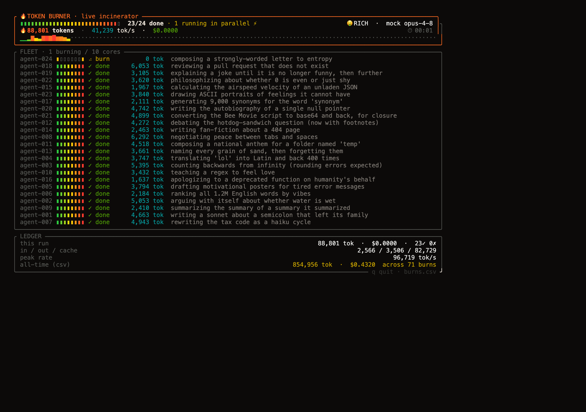
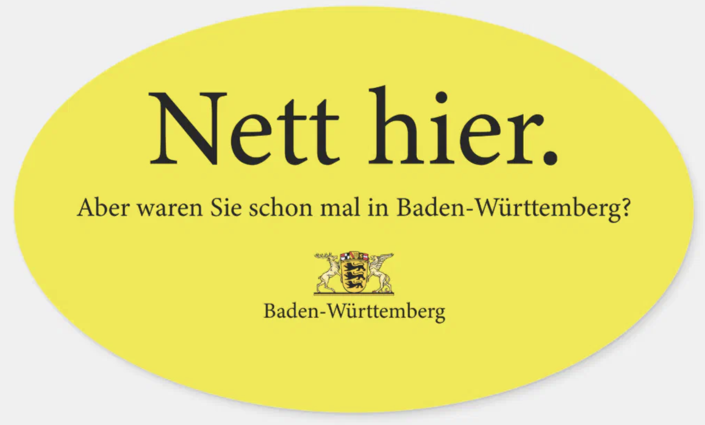

Burn
Each agent gets one gloriously over-the-top task — a sonnet about a runaway semicolon, an argument over whether water is wet, release notes for the heat death of the universe — and commits fully. About 1-in-5 develop a smug, value-proud streak.
Die schwäbische Doktrin
schwabe spins up a fleet of real AI agents to incinerate every token you paid for — and logs every last one. It runs entirely in your terminal. Letting them expire unused is the only real waste.
$ npm i -g schwabe
Then run schwabe for the menu — or node burn.js --dry to watch it free. Nichts verschwendet.
What it burns on
Nothing left on the table. Each agent gets one magnificently over-the-top task and commits fully — and every token is accounted for.
Each agent gets one gloriously over-the-top task — a sonnet about a runaway semicolon, an argument over whether water is wet, release notes for the heat death of the universe — and commits fully. About 1-in-5 develop a smug, value-proud streak.
--forestEach agent “plants” an ASCII tree into a growing FOREST.txt while we tally virtual CO₂ savings — using real per-species sequestration rates — against the very real CO₂ we just emitted. Certified carbon-negative™. (It is not.)
Heat-graded progress, per-agent spinners, a tokens/sec graph, and a running ledger with lifetime totals. Colors auto-adapt to a light or dark terminal. Press q to bail — or run --plain headless.
Every agent is recorded to burns.csv (metrics) and ashes.jsonl (the output), with lifetime totals carried across runs. Hit a rate or budget limit and the fleet waits and keeps retrying until it clears, then resumes.

Get burning
Dependency-free and terminal-only. Global install, npx, or clone and run — all three work.
1 Install globally
$ npm i -g schwabe # or: npx schwabe2 Open the menu
$ schwabe # ↑/↓ move · enter select · ← back · q quit3 Prefer flags? Drive burn.js directly
$ node burn.js --forest --schwabe --count 25▸ Common burns
# default tier (rich/opus) — spends real money
$ node burn.js
# mock backend — same UI, ZERO spend (safe preview)
$ node burn.js --dry
# cheap 5×5 forest on haiku
$ node burn.js --forest --schwabe --count 25
# headless line output (no full-screen TUI)
$ node burn.js --plainnode burn.js with no flags spends real tokens on opus.
Watch it free first with node burn.js --dry.
Reference
Budget tiers: --schwabe 🪙 haiku · --student 🎓 sonnet · --rich 🤑 opus (default). The menu sets these for you; the flags are for the impatient.
| Flag | Meaning | Default |
|---|---|---|
--forest | Plant a virtual forest instead of burning text | off |
--schwabe / --student / --rich | Budget tier → haiku / sonnet / opus | --rich |
--mode <tier> · --model <id> | Same, long form · override the model | from tier |
--count N (alias --fleet) | How many agents | 24 |
--concurrency N | How many run at once | 10 |
--backend <name> | claude · gemini · codex · mock | claude |
--dry | Mock backend, no spend | off |
--plain | Headless renderer | auto (non-TTY) |
--no-retry | Give up instead of waiting out rate limits | off |
--share <platform> | Print a brag link after the receipt (never opens a browser) | off |
Why this exists
Paid for it? Then you use all of it, bis auf den letzten Tropfen.
A Schwabe is from Baden-Württemberg — the part of Germany known for not spending money. He doesn’t throw out food, doesn’t leave the lights on, and will circle the block for twenty minutes to dodge a parking fee. Sunk cost isn’t a fallacy to him; it’s just not a concept he accepts.
Now think about your token limit. You paid for it, it resets on a timer, and any tokens you didn’t use are simply gone when the window closes. The real nightmare: the tank refills two days before the plan expires. A normal person shrugs. The Schwabe clears his calendar and burns day and night — breakfast, lunch, 3 a.m. — until every last token is spent.
That’s what schwabe is for. You sit down, burn through every token you’re owed, and hit a clean 100% with a clear conscience. It was never about the output. Nichts verschwendet.
And for the Green Schwabe — the one who drives a 1,000 hp, 3-tonne
“AA++” hybrid SUV — there’s --forest. Plant a whole virtual
forest to offset the emissions. It cancels out about as much CO₂ as the
tokens cost you, but the conscience stays spotless.
* The one time a Schwabe spends all his money at once is buying a house. And the moment he signs, he bumps up the loan so he can also drive home a Mercedes, then spends the next 40 years paying both back. Sparsamkeit is a long game.

Your tank is full and the clock is running. Feed the fleet, hit 100%, and walk away with a clear conscience.